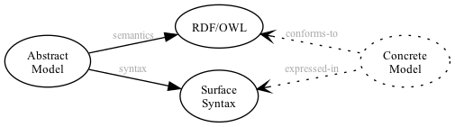
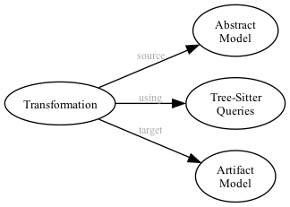
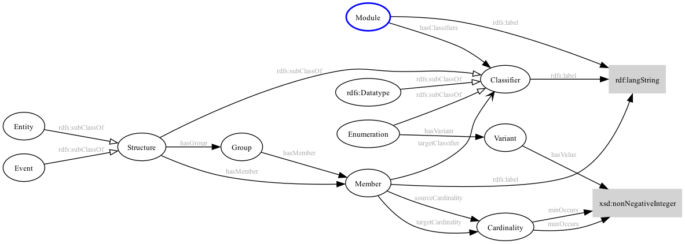
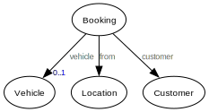
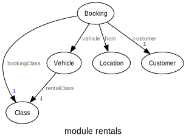
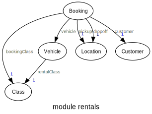
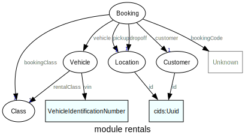
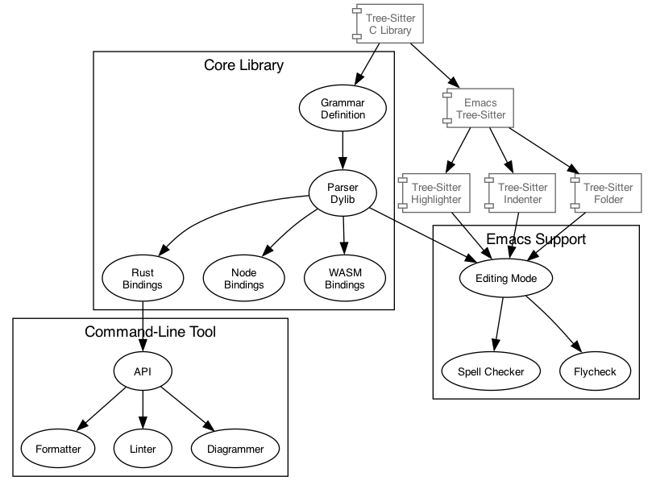

Simple Domain Modeling Language
Table of Contents
- 1. Introduction
- 2. Surface Syntax
- 3. RDF Abstract Model
- 4. Walk-Through Example
- 5. Transforms
- 6. Implementation and Tools
- 7. Appendix: Surface Syntax to RDF
- 8. Appendix: Domain Modeling
- 9. Appendix: Known URI Prefixes
- 10. Appendix: Tables of Other Content
1. Introduction
The Simple Domain Modeling Language (home | Github) is a small data-oriented language for constructing, documenting, and reasoning about a conceptual domain model. For a background on domain modeling see appendix 8. At it's core SDML comprises an abstract model whose structure and semantics are described by an OWL (RDF) ontology, and a surface syntax for editing and sharing concrete models. This document covers both the OWL and SDML representations and the correspondence between them, however the primary focus of the documentation is the surface syntax as most users will be interacting with it alone. Figure 1 shows the relationship between these high-level components.
The language uses some ideas from UML which is often used in the construction of such models today. However, the goal is to keep the language as small as possible, taking away some options where they don't make sense or where their use may distract from the major purpose of the model. The model also takes some of the language from Domain-Driven Design1, namely the separation of entities (an object defined not by its attributes, but its identity) from value objects (an immutable object that contains attributes but has no conceptual identity), simply termed structures in SDML. This model does not include the following as first-class concepts: aggregates, repositories, factories, or services.

Figure 1: Model Overview
One element that is not included in figure 1, as it is primarily an implementation decision, is that the reference implementation for SDML is provided as a Tree-Sitter package. While generated tree-sitter parsers are not intended to be fast, or to be part of a compilation processes they do provide a multitude of language bindings, and a concrete syntax tree allowing easy development of the relatively simple tools required for SDML usage.
Figure 2 demonstrates another key element of a Model-Driven Development2 style, the transformation between models and between models and other development artifacts.

Figure 2: Model Transformations
2. Surface Syntax
This section describes the SDML surface syntax, a syntax intended to look and feel like a programming language but with extensibility provided by it's underlying RDF and OWL foundation. The goal of the following syntax is to allow for rapid capture of domain information but allowing elaboration of details over time. To this end we have made language features optional wherever possible such that the minimum information neccessary is required to build a valid model. This document will use the terms valid to denote a model that has no syntactic errors and complete to denote a valid model that has no short-form, or incomplete, model elements.
The grammar of the surface syntax is presented in Extended Backus–Naur form (EBNF). The addition of a character literal
range operation .. reduces the number of single character alternatives for clarity. There are also a set of pre-defined
terminals such as ASCII_DIGIT, ASCII_HEX_DIGIT, UC_LETTER_UPPER, and UC_LETTER_LOWER used to simplify character ranges
as well.
2.1. Whitespace and Comments
This grammar chooses to use the JavaScript regular expression character class \s which includes the following values,
including all Unicode whitespace.
Whitespace = "\f" | "\n" | "\r" | "\t" | "\v" | "\u{0020}" | "\u{00a0}" | "\u{1680}" | "\u{2000}".."\u{200a}" | "\u{2028}" | "\u{2029}" | "\u{202f}" | "\u{205f}" | "\u{3000}" | "\u{feff}"
Comments follow Lisp-like forms, starting with a semi-colon character and continuing to the end of line.
LineComment = ";", ( -( "\r" | "\n" ) )*
; <- comments start here, end here ->
Lisp conventions for single, double, and triple comment characters are useful but in no way enforced.
;;; File-level comment ;; Comment at-point ; Comments in right margin
2.2. Identifiers
An identifier is a string of characters corresponding to the Unicode General Category Lu (an uppercase letter) or Ll (a
lowercase letter) or the Unicode Low Line (underscore, "_", U+005F) character. Specifically an identifer must start with
and must end with a letter such that the low line character may only appear within the identifier. The following is a
brief BNF description of the identifier syntax.
IdentifierWord = ( UC_LETTER_UPPER | UC_LETTER_LOWER )+ Identifier = IdentifierWord, ( "_", IdentifierWord )*
Naming Conventions:
- Module Name
- lower Camel Case; i.e.
xsd,skos,bank, orcustomer. In general this should be a broad noun. - Structure/Entity/Event/Enum Name
- Upper Camel Case; i.e.
Customer,Account,Address, orName. In general these are nouns related to, and often narrower than, the module name. - Data Type Name
- Upper Camel Case; i.e.
ShortString,AccountNumber, orSocialSecurityNumber. In general these are broad nouns, with either a property noun suffix as inAccountNumberor a qualifier noun prefix as inShortString. Do not create capitalized acronym (SSN) or abbreviation (ID) forms unless these are universally understood within the domain. - Type Member Name
- lower Camel Case; i.e.
street,accountName, orcurrentValue. As in data type definitions these are broad nouns, with either a property noun suffix as inaccountNumberor a qualifier noun prefix as inshortName. These are commonly simply the lower Camel Case version of the corresponding type name. - Enum and Union Variant Name
- Upper Camel Case is the preferred, although SHOUTY CASE is acceptable.
2.2.1. Qualified Identifier
A qualified identifier comprises a module identifier followed by the Colon (":", U+003A) character and the identifier of a
member within that module.
QualifiedIdentifier = Identifier, ":", Identifier
A type reference may be to a locally defined type by an identifier, or an imported type by a qualified identifier.
IdentifierReference = QualifiedIdentifier | Identifier
2.3. Module Declaration and Imports
A module is the container for a set of type definitions and typically models a Domain or Sub-domain. A single resource (in the web sense of some thing identified by an IRI) may contain only a single module. Therefore, the smallest valid resource is one with an empty model.
ModuleBody = "is", ImportStatement*, Annotation*, TypeDef*, "end" Module = "module", Identifier, ModuleBody
An empty module (listing 3), specifically a module with an empty body which is the content
between the keywords is and end.
module example is end
To import types from other modules you add one or more import statements to the module body. Each statement may reference one or more module names or the qualified name of a type within a module.
MemberImport = QualifiedIdentifier ModuleImport = Identifer Import = MemberImport | ModuleImport ImportStatement = "import", ( Import | "[", Import+, "]" )
The module in listing 4 contains a single import statement referencing the module named xsd
making it's members visible in the qualified form xsd:*.
module example is import xsd end
The module in listing 5 contains a single import statement referencing the member named integer from
the module xsd making it visible.
module example is import xsd:integer end
To reduce the number of import statements a list of identifiers, both module and member, may be referenced as a list.
Listing 6 makes the members author and title from the module dc visible. Lists in SDML start
with the Left Square Bracket ("[", U+005B) character and end with the Right Square Bracket ("]", U+005D) character with
no separator character between members of the list.
module example is import [ dc:title dc:author ] end
2.4. Data Types and Values
A data value is either a simple value, a value constructor expression, an identifier reference or a list of values.
Value =
SimpleValue
| ValueConstructor
| IdentifierReference
| ListOfValues
2.4.1. Simple Values
The core data types supported by SDML are Boolean, Integer, Decimal, Double, String, (Language-Tagged String), and IRI References. Values corresponding to these types are termed simple values.
SimpleValue =
String
| Double
| Decimal
| Integer
| Boolean
| IriReference
A Boolean value in SDML is either the keyword true or false.
Boolean = "true" | "false"
An Integer value in SDML is a string of ASCII decimal digits, without leading zeros; zero, 0, is a valid value however
00 and 01 are not. The Integer type corresponds to a 64-bit signed integer number.
NumericSign = "+" | "-" Zero = "0" NonZero = "1".."9" Unsigned = Zero | NonZero, ( ASCII_DIGIT )* Integer = NumericSign?, Unsigned
A Decimal value in SDML is an integer-like value, followed by the Full Stop (".", U+002E) character and another
integer-like value. The Decimal type corresponds to a 128-bit representation of a fixed-precision decimal number.
Decimal = Integer, ".", ( ASCII_DIGIT )+
A Double value in SDML is a decimal-like value followed by a lower or upper case letter E (Latin Small Letter E, "e",
U+0065 or Latin Capital Letter E, "E", U+0045), a sign character (Hyphen Minus, "-", U+002D or Plus Sign, "+", U+002B)
and an integer-like value. The Double type is a 64-bit floating point number (specifically, the "binary64" type defined
in IEEE 754-2008).
ExponentChar = "e" | "E" Double = Decimal, ExponentChar, NumericSign?, Integer
A String value in SDML is a sequence of Unicode characters starting and ending with a Quotation Mark ('"', U+0022) character. While
standard escape sequences allow for embedding non-printing characters. The form \u{XXXX}, where X is a single hex digit,
allows for the inclusion of any Unicode characters by their code point. Note that this form requires a minimum of 2 and
a maximum of 6 such digits. In addition,the following single-character escape characters are supported.
HexPair = ASCII_HEX_DIGIT, ASCII_HEX_DIGIT CharacterEscape = "\\", ( "\"" | "\\" | "\/" | "a" | "b" "e" | "f" | "n" | "r" | "t" | "v" ) UnicodeEscape = "\\u{", HexPair, ( HexPair ( HexPair )? )?, "}" NotAllowed = "\"" | "\\" | "\u{00}".."\u{08}" | "\u{0B}".."\u{1F}" | "\u{7F}" QuotedString = "\"", ( -NotAllowed | CharacterEscape | UnicodeEscape )*, "\"" LanguageTag = "@", ASCII_LETTER_LOWER, ASCII_LETTER_LOWER, ASCII_LETTER_LOWER? ( "-", ASCII_LETTER_UPPER, ASCII_LETTER_UPPER, ASCII_LETTER_UPPER )? ( "-", ASCII_LETTER_UPPER, ASCII_LETTER_LOWER, ASCII_LETTER_LOWER, ASCII_LETTER_LOWER )? ( "-", ( ( ASCII_LETTER_UPPER, ASCII_LETTER_UPPER ) | ( ASCII_DIGIT, ASCII_DIGIT, ASCII_DIGIT ) ) ) String = QuotedString, LanguageTag?
| Escape Character | Character Name (Common Name) | Unicode Equivalent |
|---|---|---|
\\ |
Reverse Solidus (Backslash) | \u{005C} |
\/ |
Solidus (Forward Slash) | \u{002F} |
\" |
Quotation Mark | \u{0022} |
\a |
Bell | \u{0007} |
\b |
Backspace | \u{0008} |
\e |
Escape | \u{001B} |
\f |
Form Feed (Page Break) | \u{000C} |
\n |
Line Feed (New Line) | \u{000A} |
\r |
Carriage Return | \u{000D} |
\t |
Character Tabulation (Horizontal Tab) | \u{0009} |
\v |
Line Tabulation (Vertical Tab) | \u{000B} |
A Language-Tagged String value in SDML is a String as above but immediately followed by a Commercial At ("@", U+0040)
character and an unquoted string of characters that conform to a language identifier. Note that both components of such
a string contribute to equality tests, so that "abc"@en is not equal to "abc"@fr.
An IRI Reference value in SDML is a value IRI value, either absolute or relative, between a Less-Than Sign ("<", U+003C)
character and a Greater-Than Sign (">", U+003E) character. IRI references are more permissive in the SDML grammar than
the Turtle3 language.
IriReference ::=
"<",
(
- ("<" | ">" | "\"" | "{" | "}" | "|" | "^" | "`" | "\\" | "\u{00}".."\u{20}")
| UnicodeEscape
)*,
">"
See section 7.4.1 for a more detailed description of values, literals, and data types.
2.4.2. Value Constructors
While the value 101 is defined to be an Integer literal, in the presence of sub-types how do you specify the type of a
literal? To accomplish this a value constructor allows for specifying the precise type, or casting a value to a specific
type.
The syntax appears as a function call with a type reference followed by a valid simple value surrounded by the Left
Parenthesis ("(", U+0028) and Right Parenthesis (")", U+0029) characters. The literal value MUST be valid for the
referenced type, or one of it's super-types.
ValueConstructor = IdentifierReference, "(", SimpleValue, ")"
Here we assert that the value 1 is an unsigned rather than the default signed integer.
xsd:unsigned(1)
2.4.3. Value Lists
As stated in section 2.3, lists in SDML start with the Left Square Bracket ("[", U+005B)
character and end with the Right Square Bracket ("]", U+005D) character with no separator character between members of
the list. Value lists are, as one might expect, lists of values and specifically of simple values. Value lists are also
heterogeneous and may contain elements of different types.
ListOfValues =
"[", ( SimpleValue | ValueConstructor | IdentifierReference )+, "]"
[ "yes" "no" "maybe" ]
2.4.4. Defining Data Types
A datatype definition introduces a new simple data type by restriction of some existing base type.
DataTypeDef = "datatype", Identifier, "<-", IdentifierReference, AnnotationOnlyBody?
Listing 9 shows the type restriction operator, <-, defining a new type named name as a restriction on
the existing XML Schema data type xsd:string.
datatype Name <- xsd:string
While such a type is useful for conveying semantic meaning with types it doesn't provide any actual restriction on the value space of the type. This is accomplished by using a subset of the facets described in XML Schema part 2 to specify constraints on the new type. For example, in listing 10 we now see that the Name type is a string whose length is between 5 and 25 characters only.
datatype Name <- xsd:string is @xsd:minLength = 5 @xsd:maxLength = 25 end
From OWL 2 Web Ontology Language Quick Reference Guide (Second Edition):
| Facet | Value | Applicable Datatypes | Explanation |
|---|---|---|---|
xsd:minInclusive, xsd:maxInclusive, xsd:minExclusive, xsd:maxExclusive |
literal in the corresponding datatype | Numbers, Time Instants | Restricts the value-space to greater than (equal to) or lesser than (equal to) a value |
xsd:minLength, xsd:maxLength, xsd:length |
Non-negative integer | Strings, Binary Data, IRIs | Restricts the value-space based on the lengths of the literals |
xsd:pattern |
xsd:string literal as a regular expression |
Strings, IRIs | Restricts the value space to literals that match the regular expression |
rdf:langRange |
xsd:string literal as a regular expression |
rdf:PlainLiteral |
Restricts the value space to literals with language tags that match the regular expression |
2.5. Annotations
Annotations are an extension mechanism that interacts directly with the underlying RDF representation of the subject model element. While these may look like Java annotations, Python decorators, or Rust attributes it is more powerful in that it can express arbitrary statements about the model element. An SDML annotation starts with the symbol "@" and then has an identifier that resolves to an OWL annotation property, and a value for the corresponding property range.
Annotation = "@", IdentiferReference, "=", Value
The following example demonstrates an annotation attached to a module.
module example is import xml @xml:base = <https://github.com/johnstonskj/tree-sitter-sdml/blob/main/docs/sdml.org> end
module example is import skos @skos:prefLabel = [ "example"@en "exemple"@fr "例子"@zh-CH ] end
module example is import [ xml skos ] @xml:base = <https://github.com/johnstonskj/tree-sitter-sdml/blob/main/docs/sdml.org> @skos:prefLabel = "Example Module"@en end
From OWL Web Ontology Language Reference, Appendix E: Rules of Thumb for OWL DL ontologies:
If a property
ais used where an annotation property is expected then it should either be one of the built in annotation properties (owl:versionInfo,rdfs:label,rdfs:comment,rdfs:seeAlso, andrdfs:isDefinedBy) or there should be a triple:
a rdf:type owl:AnnotationProperty
2.6. Structured Types
Structured types are those which have a set of members that define their type. Types have identity but also a value space which is a product of the value space of each member. Each member has a name, a type reference and cardinality specifiers where appropriate.
TypeDef =
DataTypeDef
| EntityDef
| EnumDef
| EventDef
| StructureDef
| UnionDef
2.6.1. Members
Structured type members fall into the following categories.
- Identity
- A particular kind of member only available on entities, and required by them, to name the identifier for that entity type.
- By-Value
- A reference to a value type, i.e. Enumeration, Event, or Structure. Such a member may indicate the cardinality of the target.
- By-Reference
- A reference to an Entity type. Such a member may indicate the cardinality of both the source and the target.
- Variants
- A member within an enumeration that specifies a numeric value for each member rather than a type.
IdentityMember = "identity", identifier, TypeExpression, AnnotationOnlyBody? MemberByValue = identifier, TypeExpressionTo, AnnotationOnlyBody? MemberByReference = "ref", Identifier, TypeExpressionFromTo,AnnotationOnlyBody?
For identity, by-value, and by-reference members the general syntax uses the type reference operator, name -> type, with
additional keywords and cardinality included as follows.
| Kind | Keyword | From-Cardinality | To-Cardinality | Target Types |
|---|---|---|---|---|
| Identity | identity |
No | No | Enumeration, Event, or Structure |
| By-Value | No | Yes | Enumeration, Event, or Structure | |
| By-Reference | ref |
Yes | Yes | Entity |
Additionally, to allow for the capture of member names before the elaboration of all types the language allows for the
target type to be replaced with the keyword unknown. This marks the member, and by extension it's owning type, as
incomplete.
TypeExpression = "->" TypeReference TypeExpressionTo = "->" Cardinality? TypeReference TypeExpressionFromto = Cardinality? TypeExpressionTo TypeReference = IdentifierReference | UnknownType UnknownType = "unknown"
CardinalityExpression = "{", Unsigned, CardinalityRange?, "}" CardinalityRange = "..", Unsigned?
2.6.2. Entities
EntityGroup = "group", Annotation*, ( MemberByValue | MemberByReference )* EntityBody = "is", Annotation*, IdentityMember, ( MemberByValue | MemberByReference | EntityGroup )*, "end" Entity = "entity", Identifier, EntityBody?
module example is entity Person end
The entity Person is valid but incomplete.
module example is entity Person is identity id -> PersonId end end
module example is entity Person is ref contact {0..} -> {0..2} Person is @dc:description = "Emergency contact person" end end end
2.6.3. Enumerations
EnumBody = "is", Annotation*, EnumVariant+, "end" EnumDef = "enum", Identifier, EnumBody?
module example is enum DistanceUnit end
The enumeration DistanceUnit is valid but incomplete.
EnumVariant = Identifier, "=", Unsigned, AnnotationOnlyBody?
module example is enum DistanceUnit is Meter = 1 Foot = 2 end end
2.6.4. Entity Events
EventDef = "event", Identifier, "source", IdentifierReference, StructureBody?
module example is event PersonNameChanged source Person end
The event PersonNameChanged is valid but incomplete.
module example is event PersonNameChanged source Person is ;; identifier members will be copied from Person fromValue -> Name toValue -> Name end end
2.6.5. Structures
StructureGroup = "group", Annotation*, MemberByValue*, "end" StructureBody = "is", Annotation*, ( MemberByValue | StructureGroup )*, "end" Structuredef = "structure", Identifier, StructureBody?
module example is structure Length end
The structure Length is valid but incomplete.
module example is structure Length is @skos:prefLabel = "Length"@en end end
module example is structure Length is @skos:prefLabel = "Length"@en value -> Decimal unit -> DistanceUnit end end
module example is structure Account is @skos:prefLabel = "Customer Account"@en group @skos:prefLabel = "Metadata" created -> xsd:dateTime end group @skos:prefLabel = "Customer Information" ref customer -> {1..1} Customer end end end
2.6.6. Disjoint Unions
A disjoint, or discriminated, union is a mechanism to allow for a selection of disjoint types to be treated as a single
type. As such the elements of the union are simply type names and do not allow annotations. Note also that the keyword
of and not is starts a union body.
UnionBody = "is", Annotation*, IdentifierReference+, "end" UnionDef = "union", Identifier, UnionBody?
module example of union VehicleClass end
The union VehicleClass is valid but incomplete.
module example is union VehicleClass of Car Van Truck end end
3. RDF Abstract Model
Why RDF? …
- OWL 2 Web Ontology Language Document Overview (Second Edition)
- OWL restrictions
- OWL References for Humans
Figure 3 is an overview of the OWL Ontology.

Figure 3: OWL Ontology
Figure 3 uses some notation elements from UML, although not a UML diagram itself. For a higher resolution version, click here.
{kind=link}
- Open triangular arrow heads correspond to the RDF Schema
subClassOfrelationship. - Filled diamonds correspond to composite associations, or strong ownership.
- Open diamonds correspond to aggregate associations, or weak ownership.
3.1. SDML Ontology
Listing 27 is the ontology header that describes the Ontology itself. This shows the use of annotation properties from the Dublin Core DCMI Terms and the W3C Simple Knowledge Organization System (SKOS). These are used throughout the Ontology definition
@prefix dc: <http://purl.org/dc/elements/1.1/> . @prefix owl: <http://www.w3.org/2002/07/owl#> . @prefix rdf: <http://www.w3.org/1999/02/22-rdf-syntax-ns#> . @prefix skos: <http://www.w3.org/2004/02/skos/core#> . @base <https://sdml.io/sdml-owl.ttl#> . <https://sdml.io/sdml-owl.ttl#> rdf:type owl:Ontology ; skos:prefLabel "Simple Domain Modeling Language"@en ; skos:altLabel "SDML"@en ; dc:hasVersion "0.1.8" ; dc:creator "Simon Johnston <johntonskj@gmail.com>" ; dc:license <https://github.com/johnstonskj/tree-sitter-sdml/blob/main/LICENSE> ; rdf:seeAlso <https://sdml.io/> .
3.2. Classes
| Name | Sub-Class Of | Disjoint With |
|---|---|---|
:Module |
None. | |
:Classifier |
None. | |
:Datatype 1 |
:Classifier, rdfs:Datatype |
:Enumeration , :Structure , :Union , :Unknown |
:Entity |
:Structure |
:Event |
:Enumeration |
:Classifier |
:Datatype, :Structure, :Union, :Unknown |
:Event |
:Structure |
:Entity |
:Structure |
:Classifier |
:Datatype, :Enumeration, :Union, :Unknown |
:Union |
:Classifier |
:Datatype, :Enumeration, :Structure, :Unknown |
:Unknown |
:Classifier |
:Datatype, :Enumeration, :Structure, :Union |
:Group |
None. | |
:EntityGroup |
:Group |
:StructureGroup |
:StructureGroup |
:Group |
:EntityGroup |
:Member |
None. | |
:IdentityMember |
:Member |
:ByValueMember, :ByReferenceMember |
:ByValueMember |
:Member |
:IdentityMember, :ByReferenceMember |
:ByReferenceMember |
:Member |
:IdentityMember, :ByValueMember |
:Cardinality |
||
:Variant |
Notes:
- The class
:Datatypehas rdf typerdfs:Datatype, all others have typeowl:Class.
3.3. Object Properties
| Name | Domain | Range | Inverse Of |
|---|---|---|---|
:hasDefinition |
:Module |
:Classifier |
:isDefinedBy |
:isDefinedBy |
:Classifier |
:Module |
:hasDefinition |
:entityHasGroup |
rdfs:Entity |
:EntityGroup |
|
:structureHasGroup |
rdfs:Structure |
:StructureGroup |
|
:hasVariant |
:Enumeration |
:Variant |
:isVariantOf |
:isVariantOf |
:Variant |
:Enumeration |
:hasVariant |
:hasElementType |
:Union |
:Classifier |
|
:targetClassifier |
:Member |
:Classifier |
|
:baseDatatype |
:Datatype |
:Datatype ∪ rdfs:Datatype |
|
:eventSource |
:Event |
:Entity |
:emitsEvent |
:emitsEvent |
:Entity |
:Event |
:eventSource |
:hasMember |
:Member |
N/A | :hasMember |
:isMemberOf |
N/A | :Member |
:isMemberOf |
:hasIdentityMember 1,2 |
:Entity |
:IdentityMember |
|
:hasByValueMember 2 |
:Entity ∪ :EntityGroup ∪ :Event ∪ :Structure ∪ :StructureGroup |
:ByValueMember |
|
:hasByReferenceMember 2 |
:Entity ∪ :EntityGroup |
:ByReferenceMember |
|
:targetClassifier |
:Member |
:Classifier ∪ :Unknown |
|
:sourceCardinality |
:ByReferenceMember |
:Cardinality |
|
:targetCardinality |
:ByReferenceMember |
:Cardinality |
Notes:
- This also has the rdf type
owl:FunctionalProperty. - These are also sub-properties of
:hasMember.
3.4. Datatype Properties
| Name | Type | Domain | Range |
|---|---|---|---|
:maxOccurs |
a owl:DatatypeProperty |
:Cardinality |
xsd:nonNegativeInteger |
:minOccurs |
a owl:DatatypeProperty |
:Cardinality |
xsd:nonNegativeInteger |
:hasValue |
a owl:DatatypeProperty, subtype of rdf:value |
:Variant |
xsd:nonNegativeInteger |
3.5. Annotation Properties
| Name | Type | Domain | Range |
|---|---|---|---|
:defaultVariant |
a owl:AnnotationProperty |
:Enumeration |
xsd:NMTOKEN |
:deprecatedSince |
a owl:AnnotationProperty |
N/A | :versionString |
:introducedIn |
a owl:AnnotationProperty |
N/A | :versionString |
:versionString rdf:type rdfs:Datatype ; owl:onDatatype xsd:string ; owl:withRestrictions ( [ xsd:pattern "(0|[1-9][0-9]*)(\.0|[1-9][0-9]*){,2}" ] ) .
Common Annotations
| Name | Usage | Domain | Range |
|---|---|---|---|
skos:prefLabel |
The preferred lexical label/name of the model element. | N/A | rdf:langString |
skos:altLabel |
An alternative lexical label/name for the model element. | N/A | rdf:langString |
skos:hiddenLabel |
A lexical label/name for the element where it may be searchable but not commonly displayed. | N/A | rdf:langString |
skos:definition |
A complete explanation of the intended meaning of the model element. | N/A | rdf:langString |
skos:historyNote |
Describes significant changes to the meaning or the form of the model element. | N/A | rdf:langString |
dc:creator |
An entity primarily responsible for making the model element. | N/A | xsd:string |
dc:contributor |
An entity responsible for making contributions to the model element. | N/A | xsd:string |
dc:license |
A legal document giving official permission to do something with the model element. | :Module |
xsd:AnyURI |
dc:conformsTo |
An established standard to which the described model element conforms. | N/A | xsd:AnyURI |
rdfs:seeAlso |
Used to indicate a resource that might provide additional information about the model element. | N/A | xsd:AnyURI |
:deprecatedSince |
The specific version at which this model element was deprecated. | N/A | :versionString |
:introducedIn |
The specific version this model element was introduced. | N/A | :versionString |
:defaultVariant |
Denotes, if present, the default variant of an enumeration. | :EnumVariant |
xsd:NMTOKEN |
4. Walk-Through Example
The following section walks through the process of model creation and iterative elaboration to add detail as domain experts provide more information. In our example we will build a domain model for a vehicle rental company. So, as you might imagine we can start the model with some pretty obvious entities, but with no detail beyond their names. Listing 28 is this first-pass domain model.
module rentals is entity Vehicle entity Location entity Customer entity Booking end
The sdml tool can be used to generate a concept diagram, a high-level view of only the entities in the model and their
relationships. The following command-line will generate figure 4 from listing
28.
sdml draw --diagram concepts \
--output-format svg \
--output-file docs/rentals-concept-1.svg \
docs/rental-1.sdm
Figure 4: Rentals Concepts (First Pass)
Figure 29 is the second-pass at our model, adding relationships from the Booking entity to the
Customer, Location, and Vehicle entities. Adding a body to the Booking entity, between is … end, requires the entity
specify an identifier. To allow the addition of bookingCode without spending time on the details of it's type the
keyword unknown is used to defer the type until later.
Additionally, the vehicle relationship specifies a new cardinality overriding the usual 0.. with 0..1.
module rentals is entity Vehicle entity Location entity Customer entity Booking is identity bookingCode -> unknown ref vehicle -> {0..1} Vehicle ref from -> Location ref customer -> Customer end end
Re-running the sdml tool on listing 29 will result in the relationships added, as shown in figure
5.

Figure 5: Rentals Basic Relationships
In the next edit of our rentals model we see some additions:
- The use of
importto use theVehicleIdentificationNumberdata type from thecids(Common Identifiers) model. - The new entity
Classto model the rental class of a vehicle. Vehiclenow has an identifier, a relationship to the newClassentity, and a relationship toLocation.Bookingalso has a relationship to the newClassentity.- We demonstrate the non-range cardinality notation,
{1}, which is a shortcut for the range1..1.
module rentals is import cids:VehicleIdentificationNumber entity Class entity Vehicle is identity vin -> cids:VehicleIdentificationNumber ref rentalClass -> {1} Class ref onProperty -> {0..1} Location end entity Location entity Customer entity Booking is identity bookingCode -> unknown ref bookingClass -> {1} Class ref vehicle -> {0..1} Vehicle ref from -> Location ref customer -> {1} Customer end end
As usual we generate the concept diagram in figure 6 from listing 30.

Figure 6: Rentals More Detail
module rentals is import [cids:VehicleIdentificationNumber cids:Uuid] import [xsd:date xsd:string] entity Class entity Vehicle is identity vin -> cids:VehicleIdentificationNumber ref rentalClass -> {1} Class end entity Location is identity id -> cids:Uuid address -> {1} Address end entity Customer is identity id -> cids:Uuid contactAddress -> {1} Address driverLicense -> {0..1} LicenseInformation end structure Address structure LicenseInformation is number -> xsd:string state -> xsd:string expiration -> xsd:date end entity Booking is identity bookingCode -> unknown ref bookingClass -> {1} Class ref vehicle -> {0..1} Vehicle ref pickup -> {1} Location pickupDate -> {1} xsd:date ref dropoff -> {1} Location dropoffDate -> {1} xsd:date ref customer -> {1} Customer end end
As usual we generate the concept diagram in figure 7 from listing 31.

Figure 7: Rentals Non-Entity Detail
sdml draw --diagram erd \
--output-format svg \
--output-file docs/rentals-concept-4.svg \
docs/rental-4.sdm

Figure 8: Rentals ERD Diagram
5. Transforms
TBD
6. Implementation and Tools

Figure 9: Implementation Overview
6.1. Core Library
6.2. Command-Line Tool
$ sdml --help Rust CLI for Simple Domain Modeling Language (SDML) Usage: sdml [OPTIONS] <COMMAND> Commands: highlight Highlight file tags Extract tags from file convert Convert model files into other formats draw Draw diagrams from models help Print this message or the help of the given subcommand(s) Options: -v, --verbose... More output per occurrence -q, --quiet... Less output per occurrence -h, --help Print help -V, --version Print version
For most commands the tool accepts a pair of arguments that determine the format and location of the generated output.
These commands --output-format / -f and --output-file / -o can be used in the following manner.
--output-format svg --output-file rentals.svg -output-file rentals.svg
In the second example above the format is not specified and so the tool will use the extension of the output file as the format specifier. If the output file is not specified the output is written to stdout. If neither argument is provided the output is written to stdout in the default format.
Similarly most tools use the module resolution rules for loading a module and so the input file is actually specified
as a module name. To allow for searches in non-standard locations the argument --base-path / -b can be used to
prepend a path to the standard search path. Thus the two examples below are identical as the current directory is always
a component of the search path.
--base-path . rentals rentals
6.2.1. Highlighting
$ sdlml highlight --help
Highlight an SDML source file
Usage: sdml highlight [OPTIONS] <MODULE>
Arguments:
<MODULE>
SDML module to convert
Options:
-f, --output-format <OUTPUT_FORMAT>
Format to convert into
[default: ansi]
Possible values:
- ansi: ANSI escape for console
- html: HTML pre-formatted element
- html-standalone: HTML stand-alone document
-v, --verbose...
More output per occurrence
-o, --output-file <OUTPUT_FILE>
File name to write to, if not provided will write to stdout
-q, --quiet...
Less output per occurrence
-b, --base-path <BASE_PATH>
The path to use as the IRI base for modules
-h, --help
Print help (see a summary with '-h')
-V, --version
Print version
For the console this uses ANSI escape sequences to format the text.
sdml highlight --output-format ansi rentals
To generate formatted and highlighted HTML the tool accepts two different format specifiers, html for simply a block
of HTML that can be inserted into another document, or html-standalone to generate a full document around the
highlighted code block.
sdml highlight --output-format html rentals sdml highlight --output-format html-standalone rentals
6.2.2. Draw Diagrams
To draw a high-level Concepts diagram, use the diagram specifier concepts.
sdml draw --diagram concepts \
--output-format svg --output-file rentals.svg \
--base-path . rentals
For more detail an Entity-Relationship diagram can be generated with the diagram specifier entity-relationship.
sdml draw --diagram entity-relationship \
--output-format svg --output-file rentals.svg \
--base-path . rentals
For the mose detail a UML Class diagram can be generated with the diagram specifier uml-class.
sdml draw --diagram uml-class \
--output-format svg --output-file rentals.svg \
--base-path . rentals
6.2.3. Module Resolution
The resolver uses the environment variable SDML_PATH, …
For example, the command sdml highlight rentals will look for the following files:
{prefix}rentals.sdm
{prefix}rentals.sdml
{prefix}rentals/rentals.sdm
{prefix}rentals/rentals.sdml
sdml highlight --base-path ./examples rentals
module subDomain is import skos:prefLabel import other:Something import otherSubDomain import somethingElse end
6.3. Emacs Support
Emacs has been the primary playground for SDML and as such has some tools already built for editing and documentation.
The package sdml-mode (currently not in any package repository) is associated with any file ending in .sdm or .sdml with
highlighting and indentation support. Follow the installation instructions on the package site.
Emacs standard customization allows for managing all package variables and can be accessed via:
M-x customize-group RET sdml RET
6.3.1. Highlighting
Syntax highlighting is enabled by the tree-sitter-hl-mode minor mode based on the configuration in the constant
sdml-mode-tree-sitter-hl-patterns. The highlighting also carries over into Org Babel source blocks and into generated
content such as this documentation.
The sdml-mode also adds to the prettify-symbols-alist list, the set of symbols is in the custom variable
sdml-prettify-symbols-alist.
6.3.2. Indentation
Line indentation is enabled by the tree-sitter-indent-mode minor mode based on the configuration in the constant
sdml-mode-folding-definitions.
Default indentation is two spaces, although this can be overridden by the custom variable sdml-indent-offset.
6.3.3. Code Folding
Block Folding is provided by the ts-fold-mode minor mode based on the configuration in the constant
tree-sitter-indent-sdml-scopes. Note that folding of groups of line comments is also supported.
C-c C-s -– fold itemC-c C-s +– unfold itemC-c C-s C--– fold all items in bufferC-c C-s C-+– unfold all items in bufferC-c C-s /– unfold item and all childrenC-c C-s .– toggle fold/unfold state
As well as the mechanics of folding, the ts-fold package also has indicator support for windowed clients and this is
enabled by default with window-system is non-nil.
6.3.4. Debugging
The following two comands are provided by the underlying tree-sitter package, but exposed here with the common key
prefix.
C-c C-s d– open the tree-sitter debug viewC-c C-s q– open the tree-sitter query builder
6.3.5. Ispell
The additional package sdml-ispell provides selective spell checking by only checking selected nodes in the tree.
C-c C-s s– spell check the item at pointC-c C-s C-s– spell check all items in the buffer
By default only strings and comments will be checked, although this can be overridden by the custom variable
tree-sitter-ispell-sdml-text-mapping.
6.3.6. Flycheck
The additional package flycheck-sdml provides on-the-fly linting for SDML buffers. To enable, simply ensure Flycheck
mode is enabled for your buffer. Rather than per-buffer, you can enable this by setting flycheck-mode for all SDML files
with a hook.
The entire set of lint rules are stored in the custom variable sdml-lint-rules with the form:
'(rule-id "Issue message" level "tree-sitter query")
For example, the following rule returns the name of the module, but only if the first character is an upper case letter. This is marked as a warning by Flycheck and provided with the necessary message.
'(module-name-case "Module names may not start with upper-case" warning "((module name: (identifier) @name) (#match? @name \"^[:upper:]\"))")
6.3.7. Org-Babel
Org-Babel support provides the ability to call the SDML command-line tool to produce diagrams and more. For example, the following source block calls the CLI to draw a concept diagram for the enclosed module.
#+NAME: lst:rentals-example #+CAPTION: Rentals Concepts #+BEGIN_SRC sdml :cmdline draw --diagram concepts :file ./rentals-concepts.svg :exports both module rentals is entity Vehicle entity Location entity Customer entity Booking end #+END_SRC
The results block then references the resulting image.
#+NAME: fig:rentals-example-concepts #+CAPTION: Rentals Concepts #+RESULTS: lst:rentals-example [[file:./rentals-concepts.svg]]
But, what if we want to produce more than one diagram from the same source? By using the built-in noweb syntax we can create a new source block, but reference the original content. This source block has different command-line parameters and has it's own results block as well.
#+NAME: fig:rentals-example-erd #+BEGIN_SRC sdml :cmdline draw --diagram concepts :file ./rentals-erd.svg :exports results :noweb yes <<lst:rentals-example>> #+END_SRC
6.4. Neovim
Neovim has some great tree-sitter support with the nvim-tree-sitter and a nice in-editor playground. Firstly, add the tree-sitter plugin, but don't install yet, as shown on the nvim-treesitter page (using vim-plug):
call plug#begin()
Plug 'nvim-treesitter/nvim-treesitter', {'do': ':TSUpdate'}
call plug#end()
Now, add the following Lua block, using content from the homepage, and then set the ensure_installed to include the
query language and so highlight tree-sitter queries and set ignore_install to include sdml before installing the
tree-sitter plugin. The builtin sdml grammar will unfortunately install queries that will then be a problem so we want
to avoid that.
require'nvim-treesitter.configs'.setup {
ensure_installed = { "query" },
sync_install = false,
auto_install = true,
highlight = {
enable = true,
disable = {},
additional_vim_regex_highlighting = false,
},
incremental_selection = {
enable = true,
keymaps = {
init_selection = "gnn",
node_incremental = "grn",
scope_incremental = "grc",
node_decremental = "grm",
},
},
indent = {
enable = true
},
query_linter = {
enable = true,
use_virtual_text = true,
lint_events = {"BufWrite", "CursorHold"},
},
}
To allow tree-sitter to do folding based on folds.scm, add the following to init.vim.
set foldmethod=expr set foldexpr=nvim_treesitter#foldexpr()
Once the core plugin has been installed you can add the following Lua block in init.vim to install this grammar.
local parser_config = require "nvim-treesitter.parsers".get_parser_configs()
parser_config.sdml = {
install_info = {
url = "https://github.com/johnstonskj/tree-sitter-sdml",
files = {"src/parser.c"},
generate_requires_npm = true,
requires_generate_from_grammar = true,
},
filetype = "sdm",
maintainers = { "@johnstonskj" },
}
Additionally, try the nvim-treesitter-context and nvim-treesitter-refactor plugins based on tree-sitter.
call plug#begin()
Plug 'nvim-treesitter/nvim-treesitter', {'do': ':TSUpdate'}
Plug 'nvim-treesitter/nvim-treesitter-context'
Plug 'nvim-treesitter/playground'
call plug#end()
Add the corresponding configuration:
require'nvim-treesitter.configs'.setup {
// …
playground = {
enable = true,
disable = {},
updatetime = 25,
persist_queries = false,
keybindings = {
toggle_query_editor = 'o',
toggle_hl_groups = 'i',
toggle_injected_languages = 't',
toggle_anonymous_nodes = 'a',
toggle_language_display = 'I',
focus_language = 'f',
unfocus_language = 'F',
update = 'R',
goto_node = '<cr>',
show_help = '?',
},
}
}
7. Appendix: Surface Syntax to RDF
TBD
7.1. Whitespace
Whitespace present in the surface syntax has no effect on the corresponding RDF.
7.2. Comments
Comments present in the surface syntax are not translated into the corresponding RDF.;
7.3. Identifiers
Identifiers for modules and type definitions are appended to the base IRI of the module resource, making individual types within a module directly addressable.
Example:
Given a resource retrieved from https://example.com/v/example/ and containing the following:
module example is end
The module within has the IRI identifier https://example.com/v/example/example.
However, if the module overrides the retrieved location using xml:base, as follows:
module example is import xml:base @xml:base = <https://example.org/langs/Example#> end
The module within this resource now has the IRI identifier https://example.org/langs/Example#example.
The remainder of this section will use example modules with xml:base to make identifier IRIs more easily understood.
7.4. Values
Value Literals are necessary for the specification of annotation values. Literals fall into two categories, simple values and lists with an additional non-literal form the value constructor.
7.4.1. Simple Value Literals
| SDML Type | Underlying Type | Value Space | Lexical Space |
|---|---|---|---|
boolean |
xsd:boolean |
The values true and false |
true and false |
decimal |
xsd:decimal |
A 128-bit representation of a fixed-precision decimal number | XML Schema |
double |
xsd:double |
An IEEE double-precision 64-bit floating point type | XML Schema |
integer |
xsd:integer |
A signed 64-bit integer | |
iri_reference |
xsd:AnyURI |
Represents a Uniform Resource Identifier Reference (URI) | XML Schema |
string |
rdfs:langString |
RDF |
7.4.2. List Literals
Example:
Given the following list literal:
module example is @skos:altLabel = [ "yes" "no" "maybe" ] end
The generated RDF consists of separate statements for each value in the list.
:thing skos:altLabel "yes" . :thing skos:altLabel "no" . :thing skos:altLabel "maybe" .
For clarity and brevity this is usually written in Turtle as an object list (Turtle 2.3 Object Lists):
:thing skos:altLabel "yes", "no", "maybe" .
Currently there is no mapping from the surface syntax to list values, that is an RDF Collection (Turtle 2.8 Collections)
which constructs a list using the rdf:first and rdf:rest predicates. This would result in the following RDF:
:thing skos:altLabel ( "yes" "no" "maybe" ) .
7.4.3. Value Constructors
A value constructor allows for the precise specification of a datatype for a literal.
module example is @sdml:defaultVariant = xsd:nonNegativeInteger(0) end
:thing sdml:defaultVariant "0"^^xsd:nonNegativeInteger .
7.5. Modules
Example with Implied Base:
module example is end
@base <https://example.com/v/example/> . @prefix : <https://example.com/v/example/> . @prefix sdml: <https://api.amazonadvertising.com/domain-model> . @prefix owl: <http://www.w3.org/2002/07/owl#> . :example rdf:type sdml:Module, owl:NamedIndividual .
Example with Explicit Base:
module example is import xml:base @xml:base = <https://example.org/langs/Example#> end
@base <https://example.org/langs/Example#> . @prefix : <https://example.org/langs/Example#> . @prefix sdml: <https://api.amazonadvertising.com/domain-model> . @prefix owl: <http://www.w3.org/2002/07/owl#> . @prefix xml: <http://www.w3.org/XML/1998/namespace> . :example rdf:type sdml:Module, owl:NamedIndividual .
7.6. Imports
Example:
module example is import xml end
@base <https://example.org/langs/Example#> . @prefix : <https://example.org/langs/Example#> . @prefix sdml: <https://api.amazonadvertising.com/domain-model> . @prefix owl: <http://www.w3.org/2002/07/owl#> . @prefix xml: <http://www.w3.org/XML/1998/namespace> . :example rdf:type sdml:Module, owl:NamedIndividual .
7.7. Annotations
7.8. Data Type Definition
Example:
module example is datatype name <- xsd:string end
:name rdf:type rdfs:Datatype, owl:NamedIndividual ; rdfs:isDefinedBy :example ; owl:onDatatype xsd:string .
Example with Restrictions:
module example is datatype name <- xsd:string is @xsd:minLength = 5 @xsd:maxLength = 25 end end
:name rdf:type rdfs:Datatype, owl:NamedIndividual ; rdfs:isDefinedBy :example ; owl:onDatatype xsd:string ; owl:withRestrictions ( [ xsd:minLength "5"^^xsd:nonNegativeInteger ] [ xsd:maxLength "25"^^xsd:nonNegativeInteger ] ) .
7.9. Entity Definition
Example Empty Entity:
module example is entity Person end
:Person rdf:type sdml:Entity, owl:NamedIndividual ; rdfs:isDefinedBy :example .
Example Entity with Identity:
module example is entity Person is identity id -> PersonId end end
:Person rdf:type sdml:Entity, owl:NamedIndividual ; rdfs:isDefinedBy :example ; :hasIdentifyingMember [ rdfs:label "id" ; :targetClassifier :Person ; ] .
:Person_id rdf:type sdml:Member ; rdfs:label "id" ; :targetClassifier :Person . :Person rdf:type sdml:Entity, owl:NamedIndividual ; rdfs:isDefinedBy :example ; :hasIdentifyingMember :Person_id .
Example Entity with By-Value Member:
TBD
Example Entity with By-Reference Member:
module example is entity Person is identity id -> PersonId ref contact {0..} -> {0..2} Person is @dc:description = "Emergency contact person" end end end
:Person rdf:type sdml:Entity, owl:NamedIndividual ; rdfs:isDefinedBy :example ; :hasReferenceMember [ rdfs:label "contact" ; :targetClassifier :Person ; :sourceCardinality [ owl:minCardinality 0 ; ] ; :targetCardinality [ owl:minCardinality 0 ; owl:maxCardinality 2 ; ] ; dc::description "Emergency contact person" ] .
Example Entity with Group:
TBD
module example is entity Person is identity id -> PersonId group @skos:prefLabel = "Identification" pref_name -> xsd:string alt_name -> xsd:string end end end
7.10. Enumeration Definition
Example Empty Enumeration:
module example is enum DistanceUnit end
:DistanceUnit rdf:type sdml:Enumeration, owl:NamedIndividual ; rdfs:isDefinedBy :example .
Example Enumeration with Variants:
module example is enum DistanceUnit is Meter = 1 Foot = 2 end end
:DistanceUnit rdf:type sdml:Enumeration, owl:NamedIndividual ; rdfs:isDefinedBy :example ; :hasVariant [ rdfs:label "Meter" ; :hasValue 1 ] , [ rdfs:label "Foot" ; :hasValue 2 ] .
7.11. Event Definition
Example Empty Event:
module example is event PersonNameChanged source Person end
:PersonNameChanged rdf:type sdml:Event, owl:NamedIndividual ; rdfs:isDefinedBy :example ; sdml:eventSource :Person .
Example Event with Members:
module example is event PersonNameChanged source Person is ;; identifier members will be copied from Person fromValue -> Name toValue -> Name end end
:PersonNameChanged rdf:type sdml:Event, owl:NamedIndividual ; rdfs:isDefinedBy :example ; sdml:eventSource :Person ; :hasMember [ rdfs:Label "personId" ; :targetClassifier :Person ] , [ rdfs:Label "fromValue" ; :targetClassifier :Name ] , [ rdfs:Label "toValue" ; :targetClassifier :Name ] .
7.12. Structure Definition
Example Empty Structure:
module example is structure Length end
:Length rdf:type sdml:Structure, owl:NamedIndividual ; rdfs:isDefinedBy :example .
Example Structure with Annotation:
module example is structure Length is @skos:prefLabel = "Length"@en end end
:Length rdf:type sdml:Structure, owl:NamedIndividual ; rdfs:isDefinedBy :example ; skos:prefLabel "Length"@en .
Example Structure with Members:
module example is structure Length is @skos:prefLabel = "Length"@en value -> Decimal unit -> DistanceUnit end end
:Length rdf:type sdml:Structure, owl:NamedIndividual ; rdfs:isDefinedBy :example ; skos:prefLabel "Length"@en . :hasMember [ rdfs:label "value" ; :targetClassifier :Decimal ; ] , [ rdfs:label "unit" ; :targetClassifier :DistanceUnit ; ] .
Example Structure with Groups:
module example is structure Account is @skos:prefLabel = "Customer Account"@en group @skos:prefLabel = "Metadata"@en created -> xsd:dateTime end group @skos:prefLabel = "Customer Information"@en ref customer -> {1..1} Customer end end end
7.13. Union Definition
Example Union Structure:
module example is union Vehicle end
:Vehicle rdf:type sdml:Union, owl:NamedIndividual ; rdfs:isDefinedBy :example .
Example Union with Types:
module example is union Vehicle of Car Truck Boat end end
:Vehicle rdf:type sdml:Union, owl:NamedIndividual ; rdfs:isDefinedBy :example . sdml:hasElementType :Car ; sdml:hasElementType :Truck ; sdml:hasElementType :Boat .
Example Union with Annotation:
module example is union Vehicle is @skos:prefLabel = "Vehicle"@en Car Truck Boat end end
:Vehicle rdf:type sdml:Union, owl:NamedIndividual ; rdfs:isDefinedBy :example . skos:prefLabel "Vehicle"@en . sdml:hasElementType :Car ; sdml:hasElementType :Truck ; sdml:hasElementType :Boat . :Length rdf:type sdml:Union, owl:NamedIndividual ;
8. Appendix: Domain Modeling
There is often confusion around the use of the term Domain Model especially in regard to terms such as Data Model, Class Model, Schema and more. This short appendix is an attempt to clarify the terminology and how the relevant modeling efforts are undertaken. This is not intended as an exhaustive review of modelling approaches, standards, or technologies and neither does it make any judgement as to the usefulness of any approach or technology.
8.1. Model Terminology
A model is an informative representation of an object, person or system. The term originally denoted the plans of a building in late 16th-century English, and derived via French and Italian ultimately from Latin modulus, a measure. As is common in software development the term model is overloaded and it's use can lead to confusion as people have different expectations and assumptions regarding what kind of model is being discussed. To this end we introduce some terminology here that, if simply used as model qualifiers, helps to disambiguate the purpose of any particular model.
For now we will use the following classification to partition the major purpose of different model instances.
- Data: A data model in software engineering is a representation of concepts and the relationships, constraints, rules, and operations to specify data semantics for a chosen domain of discourse. Typically it specifies relations between kinds of things, but may also include relations with individual things. It can provide sharable, stable, and organized structure of information requirements or knowledge for the domain context.
- Behavior: Behavioral languages are designed to describe the observable behavior of complex systems consisting of components that execute concurrently. These languages focus on the description of key concepts such as: concurrency, nondeterminism, synchronization, and communication.
- Process: [Business] process modeling (BPM) in business process management and systems engineering is the activity of representing processes of an enterprise, so that the current business processes may be analyzed, improved, and automated.
A common framework for defining the level (usually of abstraction) inherent to a model are the three perspectives introduced by ANSI in 1975.
- Conceptual: In the field of computer science a conceptual model aims to express the meaning of terms and concepts used by domain experts to discuss the problem, and to find the correct relationships between different concepts. The conceptual model attempts to clarify the meaning of various, usually ambiguous terms, and ensure that confusion caused by different interpretations of the terms and concepts cannot occur.
- Logical: A logical data model or logical schema is a data model of a specific problem domain expressed independently of a particular database management product or storage technology (physical data model) but in terms of data structures such as relational tables and columns, object-oriented classes, or XML tags. This is as opposed to a conceptual data model, which describes the semantics of an organization without reference to technology.
- Physical: A physical data model (or database design) is a representation of a data design as implemented, or intended to be implemented, in a database management system. In the lifecycle of a project it typically derives from a logical data model, though it may be reverse-engineered from a given database implementation.
With these two classifications we can construct a simple grammar for the qualification of the term model:
<perspective> ::= "conceptual" | "logical" | "physical" <scope> ::= "data" | "behavior" | "process" <model-reference> ::= perspective scope "model"
8.2. Modeling Language/Notation
There have been a number of modeling techniques, notations, and languages over the years. The following table describes those in common use today. It is worth noting that after OMG standardization there are common meta-model underpinnings for UML and BPMN.
| Data | Behavior | Process | |
| Conceptual | UML1, Concept Map, Semantic Net | UML2, Flowchart | UML3, BPMN, EPC4 |
| Logical | UML1, EXPRESS, IDEF1X, IE5 | UML2 | BPMN |
| Physical | UML1, … | UML6, Statecharts, Petri net |
- Class and Component diagrams.
- Sequence, State, and Activity diagrams.
- Use Case and Activity diagrams.
- Event-driven Process Chains.
- Information Engineering (IE) introduced the commonly used crows-foot notation.
- Action Semantics and action languages.
UML has a built-in extension mechanism with stereotypes and profiles and data modeling concerns are often introduced with specific extensions such as stereotypes for different key types.
8.3. Domain-Driven Design
Domain-driven design (DDD) is a software design approach focusing on modeling software to match a domain according to input from that domain's experts. Under domain-driven design, the structure and language of software code (class names, class methods, class variables) should match the business domain.
Within this approach the domain model is usually a conceptual or logical data model that describes the key entities that comprise the domain. The representation of this model can be any of the languages described above although UML is the common. The discipline of domain modeling is unique in it's focus on deriving data/information models directly from the business and stresses the involvement of domain experts from the business in the development of models. Additionally the literature describes specific kinds of model entities and their unique semantics, Entities, Value Objects, Events, and Aggregates, etc. which help focus conversations on key modeling concepts such as identity, lifecycle, and ownership.
Thus, a Domain Model is a conceptual (UML or Ontology) or logical (UML) data model developed according to a specific methodology (DDD) and employing a specific meta-language (UML Profile).
Some of the defined kinds, Repository, Factory, and Service are lower-level concerns and the lack of a clear separation between different levels of abstraction is one criticism of the method. Additionally terms such as Entity as defined by DDD is not entirely compatible with the use in pre-existing methods such as E/R modeling.
However, the method's focus on the business and it's vocabulary as the basis for models is valuable in an effort such as the Universal API where the model will represent our business model in different presentations.
9. Appendix: Known URI Prefixes
The following prefixes may be used in import statements without the need to reference their location directly. Either the namespace URI will be used to retrieve the corresponding resource or a local copy will be used.
| Prefix | URI |
|---|---|
dbpedia |
http://dbpedia.org/resource/ |
dbpprop |
http://dbpedia.org/property/ |
dc |
http://purl.org/dc/elements/1.1/ |
dcam |
http://purl.org/dc/dcam/ |
dcterms |
http://purl.org/dc/terms/ |
dctype |
http://purl.org/dc/dcmitype/ |
foaf |
http://xmlns.com/foaf/0.1/ |
geo |
http://www.w3.org/2003/01/geo/wgs84_pos# |
ldp |
http://www.w3.org/ns/ldp# |
owl |
http://www.w3.org/2002/07/owl# |
rdf |
http://www.w3.org/1999/02/22-rdf-syntax-ns# |
rdfs |
http://www.w3.org/2000/01/rdf-schema# |
sdml |
https://github.com/johnstonskj/sdml/ |
sioc |
http://rdfs.org/sioc/ns# |
skos |
http://www.w3.org/2004/02/skos/core# |
vcard |
http://www.w3.org/2001/vcard-rdf/3.0# |
vcard2006 |
http://www.w3.org/2006/vcard/ns# |
void |
http://rdfs.org/ns/void# |
xml |
http://www.w3.org/XML/1998/namespace |
xsd |
http://www.w3.org/2001/XMLSchema# |
9.1. Recommended Usage
9.1.1. Resource Identification
xml:base
9.1.2. Labels and Descriptions
skos, rdfs, dcterms
9.1.3. Data Type Restrictions
xsd
10. Appendix: Tables of Other Content
List of Tables
- Table 1: String Escape Characters
- Table 2: OWL Built-in Datatype Facets
- Table 3: Summary of Member Formats
- Table 4: OWL: Classes
- Table 5: OWL: Object Properties
- Table 6: OWL: Datatype Properties
- Table 7: OWL: Annotation Properties
- Table 8: Commonly Used Annotation Properties
- Table 9: Summary of Value Literals
- Table 10: List of Known URI Prefixes
List of Listings
- Listing 1: Comments
- Listing 2: Comments
- Listing 3: Empty Module
- Listing 4: Importing Module
- Listing 5: Importing Member
- Listing 6: Importing a List
- Listing 7: Value Constructor Example
- Listing 8: Value List Example
- Listing 9: New Datatype
- Listing 10: New Datatype with Restrictions
- Listing 11: Annotation Property
- Listing 12: Annotation Property List
- Listing 13: Annotated Module
- Listing 14: Empty Entity
- Listing 15: Entity with Identifying Member
- Listing 16: Entity with Reference Member
- Listing 17: Empty Enum
- Listing 18: Enum With Variants
- Listing 19: Empty Event
- Listing 20: Event
- Listing 21: Empty Structure
- Listing 22: Annotated Structure
- Listing 23: Structure Members
- Listing 24: Structure MembersGroups
- Listing 25: Empty Union
- Listing 26: Union With Variants
- Listing 27: OWL: Ontology Header
- Listing 28: Rentals Concepts (First Pass)
- Listing 29: Rentals Basic Relationships
- Listing 30: Rentals More Detail
- Listing 31: Rentals Non-Entity Detail
Footnotes:
Domain-Driven Design, Wikipedia
Model-Driven Development, Wikipedia
RDF 1.1 Turtle, 6.3 IRI References